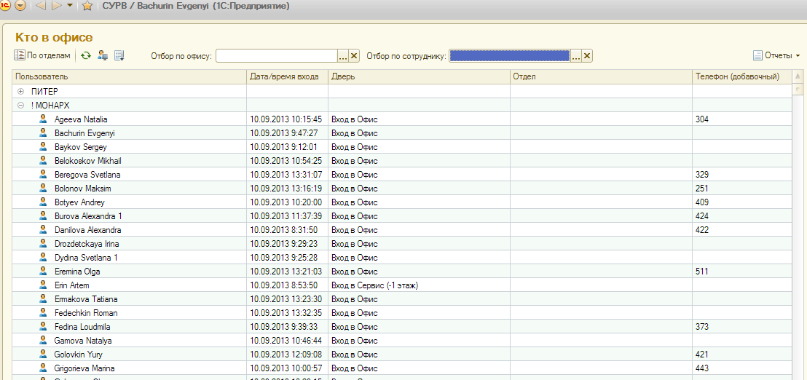
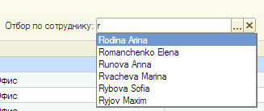
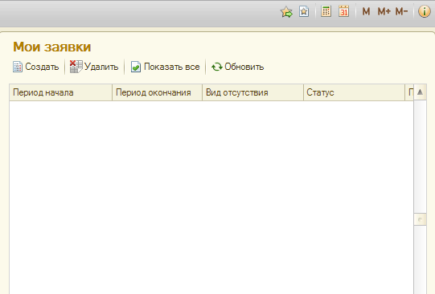
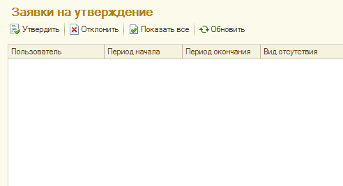
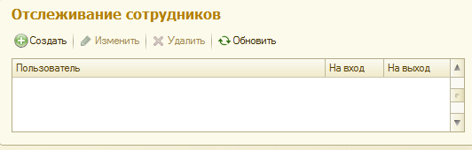
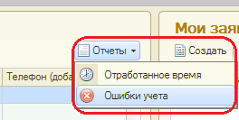
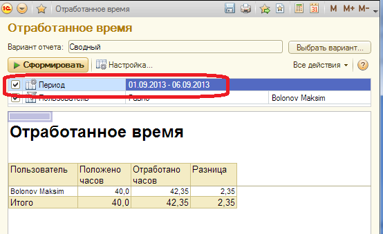
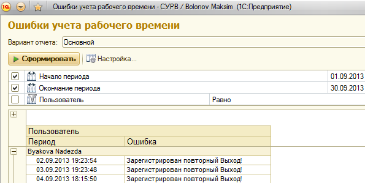

В левой части экрана системы располагается основной раздел "Кто в офисе" - это список сотрудников находящихся в текущий момент в офисе

Наверху формы доступны:
Работает поиск по первым буквам фамилии сотрудника и названия офиса:

В правом верхнем углу расположен список заявок пользователя, размещенных в системе для одобрения ответственным сотрудником:

Функции кнопок над формой:
Ниже расположен список заявок на утверждение, направленных пользователю:

Функции кнопок над формой:
В правом нижнем углу можно настроить визуальное или почтовое оповещение о входе/выходе сотрудников:

При размещении заявки в форме заявки необходимо отразить:
После размещения заявка появится в списке заявок ответственного пользователя, а после отражаться утверждения/отклонения могут быть показаны с помощью нажатия кнопки "Показать все".
При размещении, одобрении или отклонении заявки на эл. почту ответственного и автора заявки приходит соответствующее уведомление.
В меню отчеты доступны 2 отчета по регистру учета времени и 1 отчет по заявкам об отсутствии (вывод данных доступен по самому пользователю и по его подчиненным):


